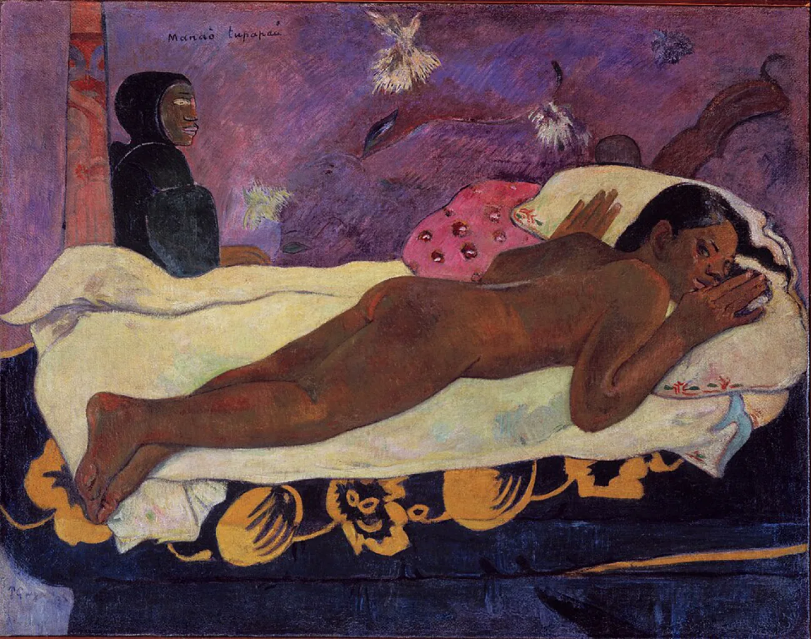
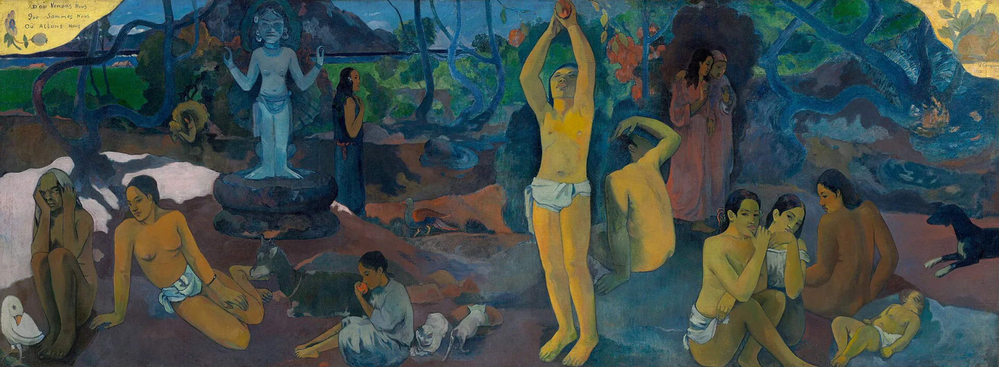
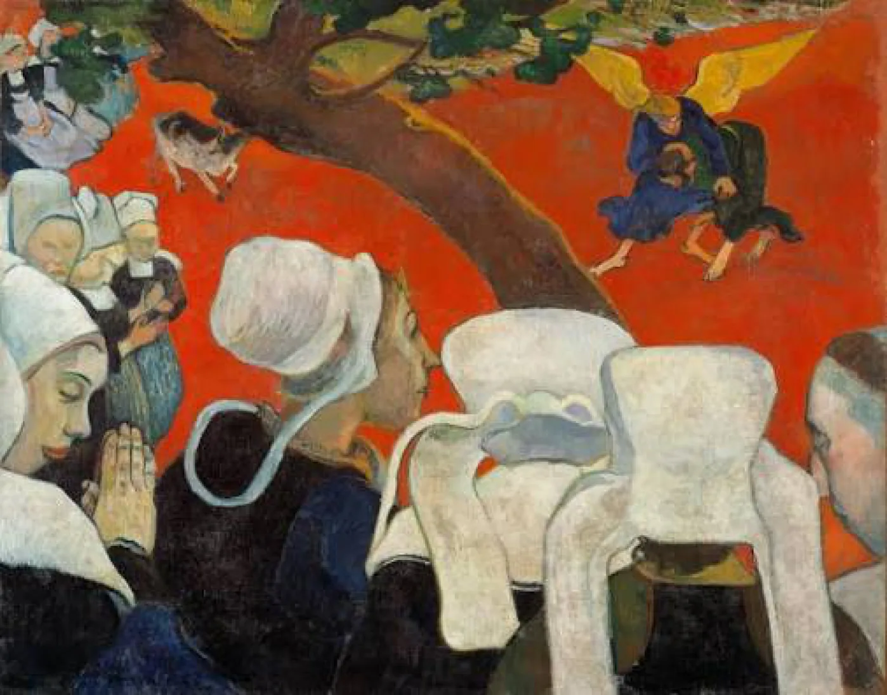

«Дух мертвых бодрствует» 1892
Шедевр психологического напряжения и игры с подсознанием.
Картина, написанная на Таити, балансирует между эротикой и первобытным страхом. На кровати лежит обна...
Девушка не просто боится привидения — Гоген создал эффект «подсматривания». Зритель невольно отожде...

«Откуда мы пришли? Кто мы? Куда мы идем?» 1897
Философский завет художника, замаскированный под райский пейзаж.
Это монументальное полотно (около 4 метров в ширину) Гоген считал своим главным достижением и лучшей р...
Колористика здесь уникальна: Гоген использует приглушенные, загадочные синие, изумрудные и охра, созд...

«Видение после проповеди» 1888
Полотно, где цвет перестал описывать реальность и стал выражать мысль.
Это манифест синтетизма. Гоген отказывается от иллюзии глубины и пространства. Взгляните на землю: он...
Гоген делит холст диагональным стволом дерева: слева — реальность (женщины в строгих чепцах), справа ...